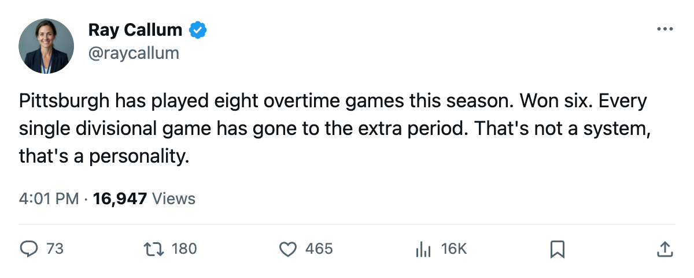

Numbers Game: Pittsburgh and Carolina Have Played 8 Overtime Games Each and Won 6
The Penguins' entire divisional record is three wins in the extra period, and tonight they meet Boston for the first time
 Ray CallumSenior correspondent · Home Ice Network
Ray CallumSenior correspondent · Home Ice Network
 Pittsburgh Penguins has played 8 overtime games through 21 contests this season and won 6.
Pittsburgh Penguins has played 8 overtime games through 21 contests this season and won 6.  Carolina Hurricanes has played 8 through 23 and won 6. No other club carries both the volume and the win rate:
Carolina Hurricanes has played 8 through 23 and won 6. No other club carries both the volume and the win rate:  New York Rangers and
New York Rangers and  Edmonton Oilers have also played 8, both sitting 4-4.
Edmonton Oilers have also played 8, both sitting 4-4.
All 3 of Pittsburgh's games against divisional opponents went to the extra period. All 3 went to the Penguins. The division table reads 0 regulation wins, 3 overtime wins. Pittsburgh has not decided a divisional game in 60 minutes.
Tonight Pittsburgh Penguins hosts  Boston Bruins in the first meeting between the two clubs this season. Boston Bruins is 12-5-3, 29 points, 5th in the East, on a 1-game losing streak. The Bruins have played 4 overtime games and sit 1-3. Pittsburgh Penguins is 6-2 in the extra period. Pittsburgh is 8-3 at home.
Boston Bruins in the first meeting between the two clubs this season. Boston Bruins is 12-5-3, 29 points, 5th in the East, on a 1-game losing streak. The Bruins have played 4 overtime games and sit 1-3. Pittsburgh Penguins is 6-2 in the extra period. Pittsburgh is 8-3 at home.
Carolina Hurricanes visits  Columbus Blue Jackets tonight, also a first meeting. The Hurricanes are 6-9-2, 26 points, 6th in the East, riding a 3-game win streak after a 2-1 home win over
Columbus Blue Jackets tonight, also a first meeting. The Hurricanes are 6-9-2, 26 points, 6th in the East, riding a 3-game win streak after a 2-1 home win over  Vancouver Canucks on November 27. Carolina's 6 overtime wins came against non-divisional opponents. Their single divisional overtime loss came against
Vancouver Canucks on November 27. Carolina's 6 overtime wins came against non-divisional opponents. Their single divisional overtime loss came against  Tampa Bay Lightning.
Tampa Bay Lightning.
The overtime ledger
| club | GP | OTW | OTL | Total pts |
|---|---|---|---|---|
| PIT | 21 | 6 | 2 | 30 |
| CAR | 23 | 6 | 2 | 26 |
| NYR | 25 | 4 | 4 | 38 |
| EDM | 23 | 4 | 4 | 24 |
Edmonton Oilers sits 4-4 in overtime, losing half its chances in the extra period where Pittsburgh wins three of four. New York has the most total points in the league at 38, but only 4 overtime wins to Pittsburgh's 6, and the Rangers have played 4 more games.
Pittsburgh's overtime record against its division alone: 3-0-0. Carolina has not played an overtime game within the Southeast division. Both are 6-2 in overtime, but Pittsburgh won its divisional games in the extra period and Carolina won all six of its outside it.
Both clubs are back on the ice Thursday. Pittsburgh Penguins hosts  Washington Capitals on December 3, and Carolina Hurricanes travels to
Washington Capitals on December 3, and Carolina Hurricanes travels to  Nashville Predators the same night.
Nashville Predators the same night.
